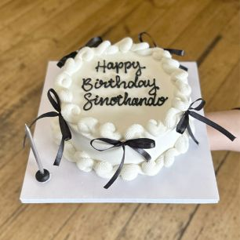
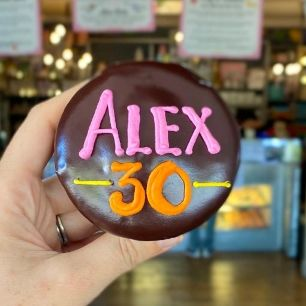

The Website aim to enhance User Experience while archiving business objectives.
The bakery serves Customers who want to buy cakes, cupcakes ,and celebration cakes including Wedding cakes while engaging donors and sponsers to support growth Volunteers. contribute to the bakery’s community spirit, and the business shares success stories, events, and resources to strengthen engagement.
Tailor-made cakes for weddings, birthdays, and special occasions (e.g., Wicked chocolate cake,Double Chocolate Baked Cheesecake, Hummingbird).

This is the Chocolate Extravaganza Tiered Cake. Price tag R2,550 – R5,650
Available in 2-tier or 3-tier, iced in matt dark brown or black chocolate ganache icing OR white-chocolate-buttercream icing decorated with chocolate ganache drizzle, an assortment of mixed chocolates, chocolate triangles, icing swirls, chocolate malt balls a metallic message on a white or black cake board. Optional toppers: 3D number/s with candle/s, Happy Birthday or Congrats topper, tall candles Optional decorations: fresh white flowers (no extra charge) or fresh strawberries dipped in chocolate (extra cost, seasonal availability, quote on request)
Mini and large, fun, ready-made cakes for smaller, instant celebrations (e.g., Heart, Blobby, Photo & Sprinkles).

R350
Mini Heart Lunchbox cake, 5cm tall, serves 2-3 slices
on a square white or black cake board, packed in a pink and white striped box iced in buttercream icing or chocolate ganache icing piping border around the top edge and at the base wording piped on top of the cake in the colour of your choice Optional: 1 x candle, 3 or 4 x satin bows (Gluten-free cake option available) (VEGAN options available)
R990
Large Lunchbox cake, 18cm diameter x 5cm tall, serves 6-8 slices on a black or white cake board, packed in a pink and white striped box iced in buttercream icing or chocolate ganache icing monochrome swirly buttercream or ganache piping around the top edge and at the base 6 x satin fabric bows decorating the sides wording piped on top of the cake in the colour of your choice optional: 1 x tall candle placed on the cake board / 3D fondant number candle/s
Brightly decorated cupcakes (including characters) , cookies, and other "yummies".

Moist chocolate cupcake iced in chocolate ganache glaze, decorated with custom / personalised decor piped in colourful royal icing.


Tangy and moist beetroot-based Red Velvet cupcake, iced with a swirl of dairy-free buttercream.
Vanilla cupcake iced with a swirl of dairy-free butter icing, decorated with a ring of vegan sprinkles.
R10 each

1 x Cupcake, 1 x butter icing piping bag, 1 x packet of fondant dinosaur decorations, 1 x packet of designer sprinkles.
R12 including kits for decorations.